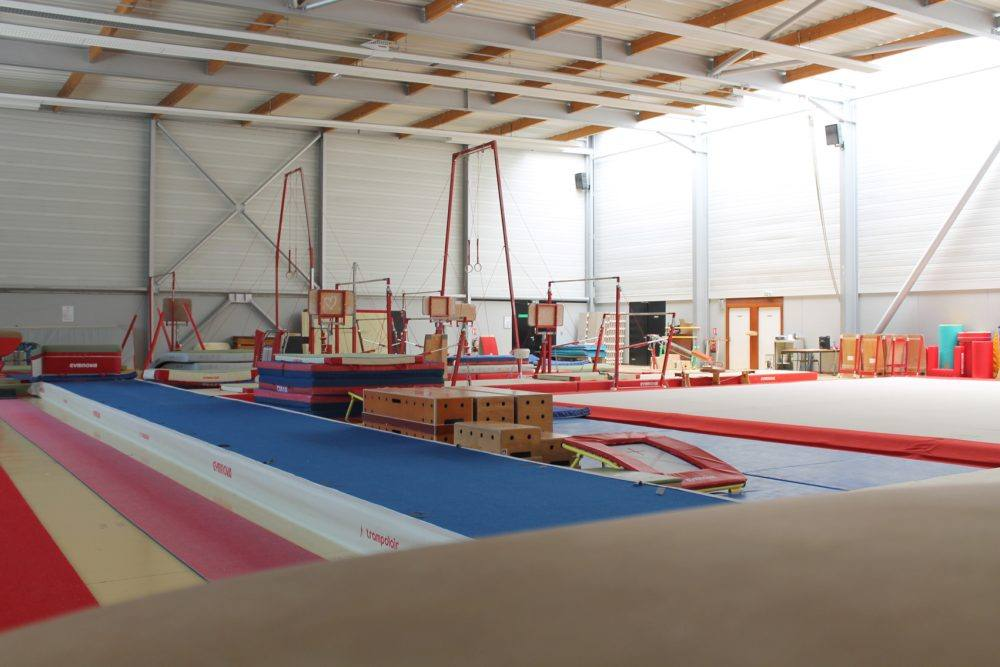

Les installations sportives
- Le Centre omnisports « Le Chêne » 1 rue du Stade
{kind=link}
{kind=link}
Opérationnel depuis 1989, l’infrastructure profite essentiellement aux associations locales. Le Centre omnisports, rue du Stade, comporte :
- une salle pour la pratique de nombreux sports collectifs ou individuels : handball, basket, football en salle, volley-ball, football sur table (baby-foot),
- une salle dédiée à la gymnastique,
- un terrain de football : un terrain d’honneur pour les rencontres, un terrain synthétique pour les rencontres et des terrains d’entrainement, un club-house avec des vestiaires et des installations sanitaires
- Tennis Club, rue de l’Uranium : trois courts de tennis dont un couvert avec club-house.
{kind=link}
- Gymnase du Centre 16 a rue des Vosges : ce gymnase, en service depuis 1973, est utilisé à temps plein par les associations locales. Il est équipé d’un plateau pour les sports d’équipes (hand-ball, basket) ou individuels (gymnastique) et de salles spécifiques (dojo, salle de lutte, salle de billard).
{kind=link}
{kind=link}